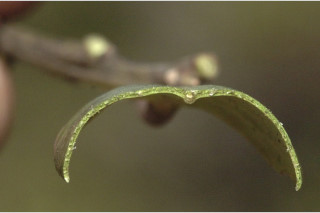
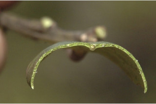

| Habit : | Evergreen trees , up to 15 m tall. |
| Leaves : | Leaves simple , alternate , spiral ; petioles 1-1.3 cm long, canaliculate ; lamina 5-10 x 2.5-3 cm, elliptic or oblong , apex acute , base rounded and cuneate , margin serrate , coriaceous ; midrib canaliculate ; secondary_nerves 6-9 pairs; tertiary_nerves obscure . |
| Inflorescence / Flower : | Flowers unisexual , dioecious ; male flowers in short pedunculate cymes , sessile or subsessile , pistilode present; female flowers in axillary fascicles , staminodes present. |
| Fruit and Seed : | Drupe , globose , red to purple; locule 4, each 1-seeded . |


 
